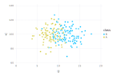

TuringPlots
An example plot:

using Turing
using TuringPlots
@model function globe_toss(n, k)
θ ~ Beta(1, 1)
k ~ Binomial(n, θ)
return k, θ
end
chains = sample(globe_toss(9, 6), NUTS(0.65), 1000)
plot(chains, y = :θ)Gadfly.plot — Methodplot(chains::MCMCChains.Chains,
elements::ElementOrFunctionOrLayers...; mapping...) -> PlotPlot a chains object. This method makes the parameters of the chains object available to Gadfly. ```
TuringPlots.vertical_ci_bars — Methodvertical_ci_bars(chains)This plot shows stacked posterior distributions with central 90% credible intervals. Horizontally, multiple chains are stacked from different models. Vertically, parameters are stacked.